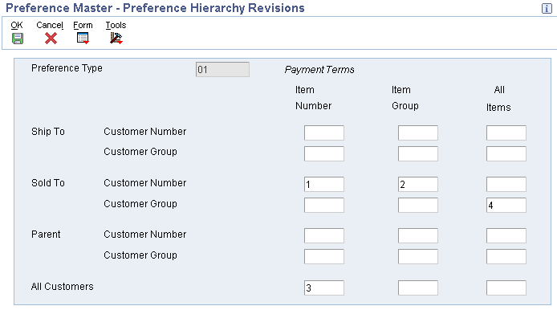
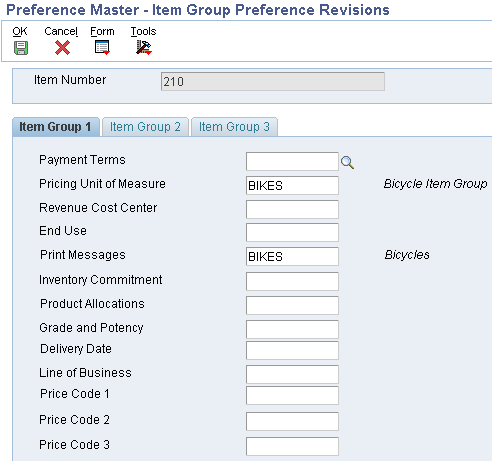
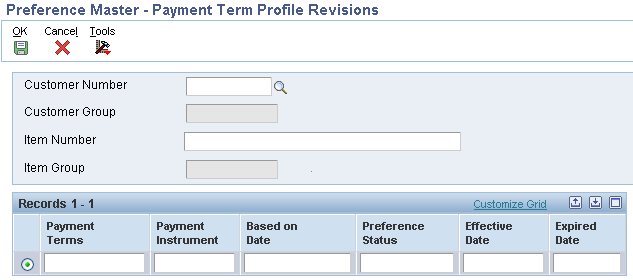

Scope
Details
Table of Contents
Preference Master
Master Revisions
Preference Hierarchy
Customer Preference Groups
Item Preference Groups
Adding Preference Information
Preference Selection
Processing Option Settings
Profiles By Customer/Items
Preference Batch Processing
Preference Master
Select on Preference Master (P40070) from menu G4231.

Master Revisions
Take the Master Revisions row exit where the constants are defined for each preference type to be used. These are used to build a preference profile list.

Preference Type: UDC 40/PR. This is the same UDC table that is used for base and advanced pricing hierarchies. Each preference is represented by its own value in this UDC table.
Description: This displays on the preference profiles main listing.
Preference Classification: UDC 40/CL. Header title used to group preferences on the preference profile main listing, P40070.
Sequence Number: The order preferences will appear (if more than one) under the header.
Enable Effective Dates and Quantity: These flags control the display and use of the date and quantity fields on the preference inquiry and maintenance screens, P40300. Note: If using the Effective Quantity flag, the Effective Date flag must be used as well. This is necessary due to the file key structure.
If Effective Quantities are activated, no UOM conversion will take place. The preference becomes UOM specific. This means that a preference must be created for each UOM to be used. Furthermore, if the flag is ever changed to not use Effective Quantities, delete all of the preferences that use Effective Quantity and re-enter the new preference with the Effective Quantity flag disabled.
Preference Hierarchy
Preference Hierarchy: P40073-F40073. An existing hierarchy can be modified for the selected preference by taking the Hierarchy row exit from the Work With Preference Master form. A hierarchy can also be added for custom preferences by selecting on P40073 from menu G4222. The hierarchy allows a preference to be setup for a specific item, item group, customer, customer group, or a combination of these. A hierarchy must be set up for any preference to find a match. Each preference has its own preference type.

The hierarchy tells the system in which order to search through the preference file for a match. Start with the most specific and list to the most general. The hierarchy must start with a '1' and numbers can't be skipped. Use as few levels as possible, the more levels, the more processing time is required. Customer can be Sold To, Ship To, or Parent. Some preferences, like Print Messages, will disallow the use of certain combinations (see Individual Preference Setup).
Preferences will search the Preference Hierarchy and when they find a match, it will resolve the preference and will not continue searching to find a match at lower levels.
For example assume the hierarchy is setup with sold to customer number & item number as level 1 and sold to customer group & item number as level 2.
If an exact match exists for level 1 (customer number & item number), the preference selects that record, resolves the preference and stops searching. Once a match occurs, the system will not keep searching for matches at lower levels. For example if the customer address is also included in the customer group and item causing a match at level 2, that match will not be found and the preference will not get resolved for the level 2 search.
If you want multiple searches you would have to use Advanced Preferences and setup two or more Preference Names for Preference Type using different Preference Hierarchies for each Preference Name and then include all the Preference Names in the Advanced Preference Schedule.
Please Refer to Doc ID Advanced Preferences (P4070/P4071/P4072/P4210/P42101) for details on how multiple searches could be implemented using Advanced Preferences.
Customer Preference Groups
Customer Preference Groups: P40071-F40071. From the Work With Preference Master take the Customer Groups form exit. Simply select the record after finding the address book value to be used, and populate the necessary fields for each preference. This is used to create customer groups for preferences. Each preference type has a separate UDC table for customer groups.
There is NO setup in the Customer Billing Instructions for Customer Preference Group. However, Customer Billing Instructions must exist to be able to find the customer from the Customer Groups (P40071) window.


Item Preference Groups
Item Preference Groups: P40072-F40072. From Work With Preference Master take the Item Groups form exit, which is used to create item groups for preferences. Each preference type has a separate UDC table for item groups. Simply find the item number and select it. Then select the appropriate field for the preference(s) being used.
There is no setup in the Item Master or Item Branch/Plant for Item Preference Groups.


Adding Individual Preferences
Adding Individual Preferences: From the Work With Preference Master form select a specific preference and then add the preference details. Each preference has its own unique program and file ID. For example, the payment terms preference has an application ID of P40301 and a file ID of F40301.
Find/Browse/Add business view (payment terms preference):

Click Add, then select the level of the hierarchy to add, the Detail business view is displayed:

The Preference Revisions screen will differ for each preference. See the Individual Preference Setup Considerations for more detail.
Preference Selection
Preference Selection: R40400-G4231. Create a version of Preference Selection (R40400) UBE. In the processing options, enter a "1" or a "2" next to each of the preferences to be processed in Sales Order Entry (P4210). As described in the next section, this version will need to be attached to the Versions tab within the Sales Order Entry (P4210) processing options, and activate preferences within the Sales Order Entry (P4210) processing options. Note: This UBE is not used for Advanced Preferences.
A value of "2" in the preference processing option allows records to be written to the Preference Resolution Ledger (F40300R) when the preference is applied. This option will allow the user to access information at Sales Order Entry via the row exit to "Preference Resolution" (P40300R). There is a resolution table for each preference type (F403xxR).
The Preference Resolution Ledger is not updated by the following preferences for the reasons specified:
- Print Message (05) - Not called from Sales Order Entry (P4210), and is only used by print programs such as Pick Slip (R42520) and Invoice Print (R42565). There are no values stored in the Sales Order Detail (F4211) file.
- Commitment (06) - User could override the results from a window and the lines can be split to different locations.
- Product Allocation (07) - Only issues a warning in Sales Order Entry (P4210), and there is no value stored in the sales order detail.
- Invoice Cycle (15) - Not called from Sales Order Entry (P4210), and is only used by the Cycle Billing (R49700) program. There are no values stored in the sales order detail.
- None of the Transportation preferences write to the Preference Resolution Ledger.
Note: The Print Messages, Invoice Cycle, Inventory Commitment preferences do not require Preference Selection.
Processing Option Settings
Processing Option Settings: Sales Order Entry (P4210). Enter the version of Preference Selections (R40400) UBE that will be used in Processing Option #6 on the Versions tab. Enter a "1" in Processing Option # 1 on the Preference tab to activate preferences. Enter a 1 in processing option #2 of the Preference tab to use the Inventory Commitment preference.
Profiles by Customer/Item
Profiles by Customer/Item: P40300. This program is used to find what preferences may already exist for certain customer/item combinations. Determine the strategy of each preference's use whenever a preference already exists for certain combinations.
Preference Batch Processing
Preference Batch Processing: R40840. This UBE is used to populate existing sales order detail lines with preference profile values, used to populate blank fields and/or override non-blank fields.
Please note that Batch Batch Preference Processing (R40840) is only designed to re-process the following basic preferences:
- 01 Payment Terms
- 02 Pricing Unit Of Measure
- 03 Revenue Cost Center
- 04 End Use
- 07 Product Allocation
- 08 Grade and Potency
- 09 Delivery Date
- 10 Line Of Business
- 11,12,13 Price Code 1,2,3
- 16 Order Preparation Days
- 14 Price Adjustment Schedule
- 41 Next Order Status
- 44 Sales Commission
- 45 Customer Currency
- 38 Payment Terms (Branch Specific)
- 47 Pricing Unit Of Measure(Branch Specific)
- 49 Revenue Cost Center(Branch Specific)
- 39 Product Allocation(Branch Specific)
- 21 Receiving Location
- 22 Shipping Location
The program will also resolve the following Advanced Preferences, when the appropriate schedule is populated in option 2 of the Process tab:
- 02 Order Detail Defaults
- 03 Delivery Date
- 21 Commissions
- 22 Order Prep Days
- 24 Next Order Status
- 25 Grade and Potency
|